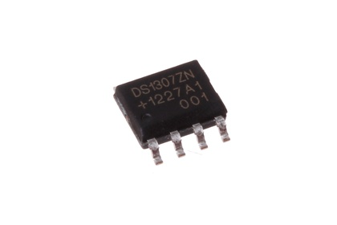

SMD (SOIC-8) Real Time Clock (DS1307) - OAS1307

Summary
Name:
SMD (SOIC-8) Real Time Clock (DS1307)
ID:
ICIC-SC8-X-KDS1307-01
Hex ID:
OAS1307
WebPage:
https://github.com/oomlout/oomlout-OOMP/wiki/ICIC-SC8-X-KDS1307-01
Short URL:
http://oom.lt/OAS1307
Revision History:
https://github.com/oomlout/oomlout-OOMP/blob/master/parts/ICIC-SC8-X-KDS1307-01/
Type
Size
Color
Description
Index
ICIC
SC8
8 Pin SMD (SOIC)
X
KDS1307
Real Time Clock (DS1307)
01
Images
About
This part is awaiting a description.
Specifications
Info
Value
Size
8 Pin SMD (SOIC)
Description
Real Time Clock (DS1307)
Extra Details
Page last updated:
2016-04-03 01:14
Spotted a mistake, want to add more? Let us know
oomp@oomlout.com
All images and resources are licensed [CC BY-SA] unless otherwise stated (ie. the datasheets)